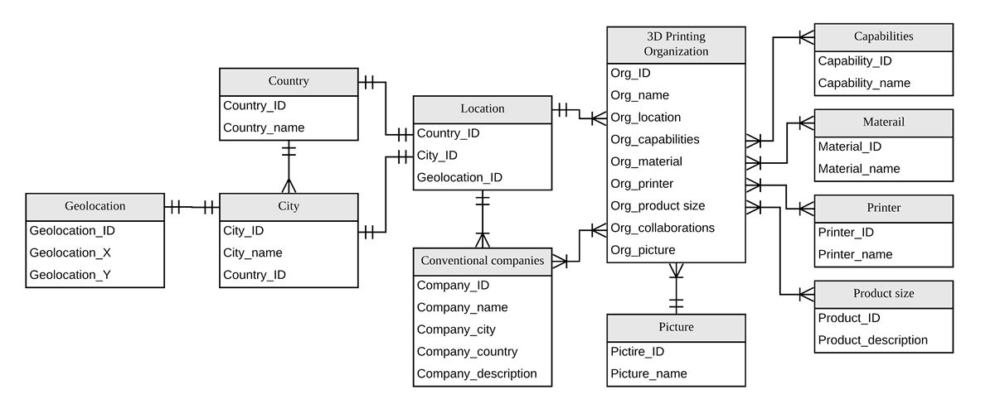
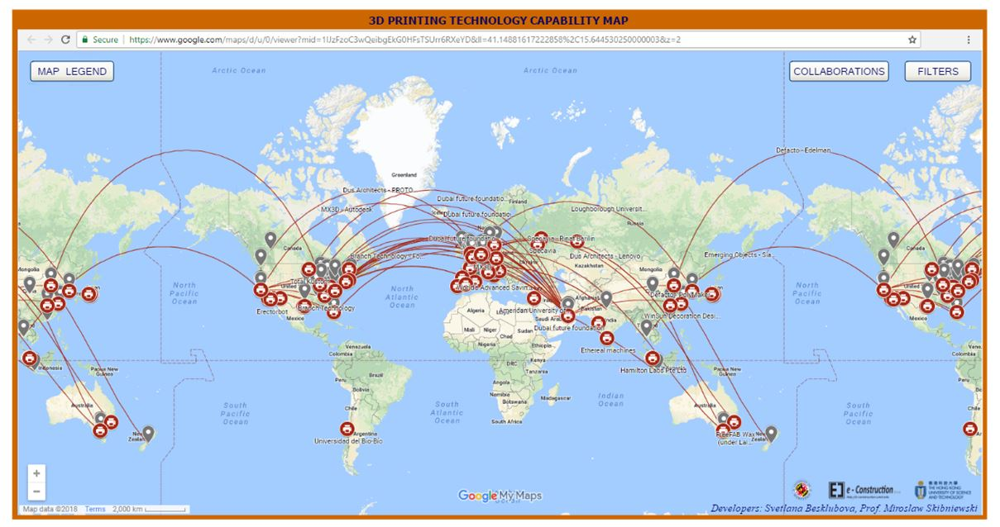
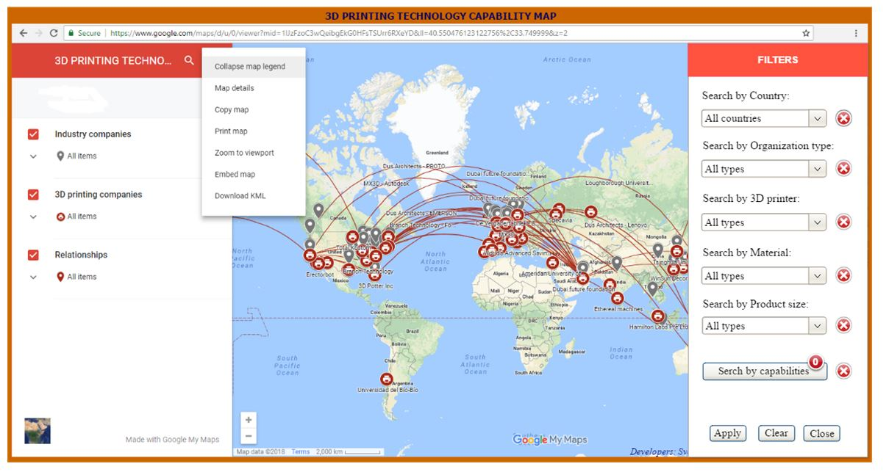
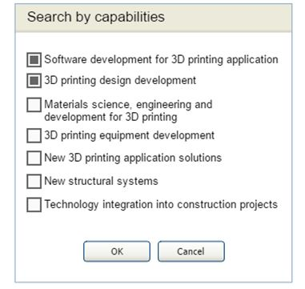
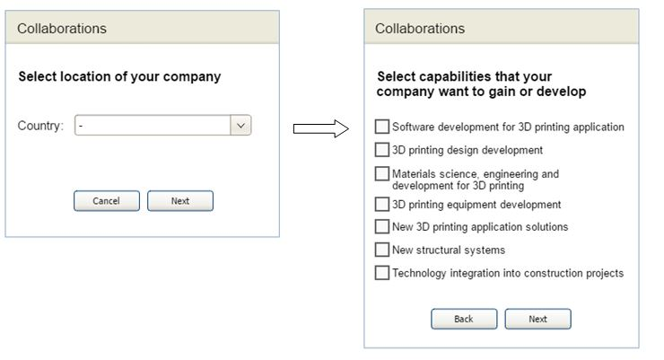
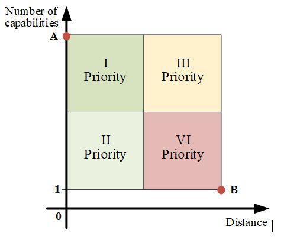

3D Printing Technology Capability Map for Use by the Contruction Industry
October 4, 2018
Geovisualization Web ProgrammingHow the system works
A 3D printing companies database organized prior to data mapping was designed using the relational model. The database holds information on 3D printing organizations where each item referred contains basic information such as organization name; attributes such as current capabilities and types; location information such as city and geolocation; and one or more pictures grouped within galleries. The database also contains information about conventional construction industry companies who collaborate with 3D printing organizations and their identified linkages. The structure of the database is shown in Fig. 1. All of these details have been imported to the map to allow a visualization of the information (Fig. 2), the initial prototype can be found by following the link.
 Fig 1. Database Enhanced-Entity Relationship Diagram
 Fig 2. 3D Printing Technology Capability Map Interface (https://goo.gl/JJJbUi)
I would like to build on top of what was initially done using My Google maps and further implement new search functionalities.
The project comprise of backend as well as frontend programming. The backend will carry out computations using self-defined functions and will process requests from the front end. We can make a simple front-end page with nice visualization and a user interface with the specifications as stated below.
The User Interface
The user interface was designed with the main focus on the map as shown in Fig. 3. The layout scheme contains buttons at the top of the map area and logos and developer names and controls for map interaction like zoom in/out at the bottom area. These buttons contain options and actions that permit users to interact with the map, selecting filters according to user needs and listing markers. The left side of the map is reserved for the map legend (refer to Fig. 3) with listed on-off layers; for instance, if a user’s need is just to see the 3D printing organizations icons, then other layers can be turned off. The map legend also contains an additional menu with the following standard Google maps functions: collapse map legend, map details, copy map, print map, zoom to a viewport, embed this map and download KML. The right side of the map is left for filters (refer to Fig. 3), which provide interactivity to a user interface through its collapsible, extensible and closable panel. 3D printing organizations and conventional construction companies are presented with icons on the map. Red icons indicate 3D printing companies presently in existence while grey icons represent conventional construction companies.

Fig 3. Map legend and filters
Search Filter Functions
This project is required to provide the user with a web interface for search functions such as those that find 3D printing organizations by location (country), by organization type or by capability; thus, the user has the option to see only selected companies. The button “filters” in the upper-right-corner area should be pressed to call the corresponding right-side panel to apply filters (refer to Fig. 2). After one filter or a filter combination is selected with the necessary values, then the button “apply” should be pressed (refer to Fig. 3); thus, the map displays the search results according to the user query. In the case that a filter combination application is selected, the map shows the search results satisfying all filters simultaneously. The button “clear” cancels all filters. The cancellation of filters can also be done one by one by pressing the “cross” next to the corresponding filter. The button “cancel” closes the “filters” panel. The following filters and functions have been integrated into the software (Fig. 3): (1) Search for a 3D printing organization will zoom to that organization location. This is a standard function of Google maps, for which an organization name should be typed in a search engine in the “map legend” panel. If the user clicks a company icon on the map, the information about the requested company will be displayed in the Infowindow. (2) Filter by country displays only the 3D printing organizations in a selected country. A user selects the country from the dropdown list. All of the 3DP organizations in the country are displayed on the map with the marker icons. (3) Filter by organization type represents only the 3D printing organizations related to the selected type (non-profit, for profit business or government agency). A user selects the country from the dropdown list. All of the 3DP organizations related to the queried type are displayed on the map with the marker icons. (4) Filter by type of 3D printer displays only the 3D printing organizations related to the selected equipment type including gantry, robotic arm, cable-suspended, small-sized mobile robot, swarm micro-robots or others. All of the 3D printing organizations developing, producing and working with a queried type of printer are displayed on the map with the marker icons. (5) Filter by type of materials shows only the 3D printing organizations related to selected material types that include cement-based, polymer, foam, plastic, welding compound, wood-based bulk material (saw dust, wooden chips, etc.) and other. All of the 3D printing organizations developing, producing and working with a queried type of material are displayed on the map with the marker icons. (6) Filter by size range of 3D printed product displays only the 3D printing organizations related to the selected size range that measure less than one meter, 1 - 4 meters along one dimension, 5 - 10 meters along one dimension and an entire building/structure. All of the 3D printing organizations that could produce the queried size of the 3D printed product are displayed on the map with the marker icons. (7) Filter by capabilities displays only the 3D printing organizations related to the selected capabilities (refer to section 3.1): A user can select a capability or combinations of capabilities from the pop-up window and then press the “ok” button once the selection process is completed (refer to Fig. 4). An indicator above the button “search by capabilities” shows how many of them are chosen. All of the 3DP organizations suitable for this request are displayed on the map with the marker icons. In the case that combinations of capabilities are chosen, companies with all the listed capabilities will be displayed. (8) “Possible collaborations” suggests possible collaborations between 3D printing organizations based on the development plan of the organization-seeker’s capability. The button “collaborations” in the upper-right-corner area (Fig.2) should be pressed to apply this function. The first pop-up window to appear allows the selection of the country where the organization-seeker is located, which should be chosen from the drop-down list (refer to Fig 5). The second pop-up window allows the choice of capabilities that the organization-seeker want to gain or develop (refer to Fig 5). As a result of a search, the list of companies satisfying the request is arranged in priority. The priorities of found companies listed are assigned on the basis of geographic location and number of current capabilities that can satisfy the query (refer to Fig.6). A company would be placed in the highest priority if it has the closest location to the organization-seeker and all the requested capabilities (refer to Fig. 6, dot “A”); conversely, a company would be placed in the lowest priority if it has just one search-satisfied capability and is in the farthest location (refer to Fig. 6, dot “B”). Priorities II and III (refer to Fig. 6) might be equal, but according to the observed tendency of collaborations between companies in the 3D printing capability map, preference is given to the location. The search result can be downloaded as an Excel file with corresponding companies and their detailed information.
 Fig 4. Search by capabilities
 Fig 5. Search possible collaborations
 Fig 6. Priority of capability list